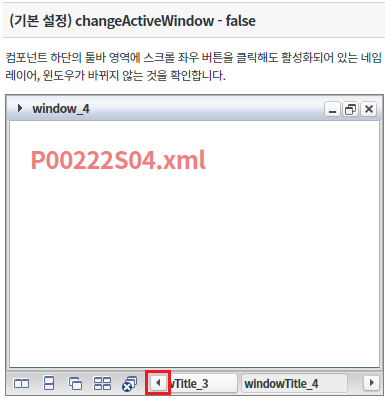
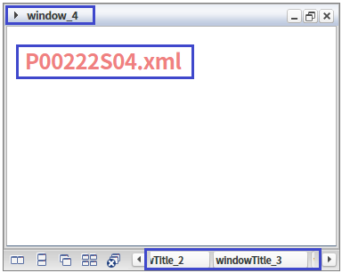
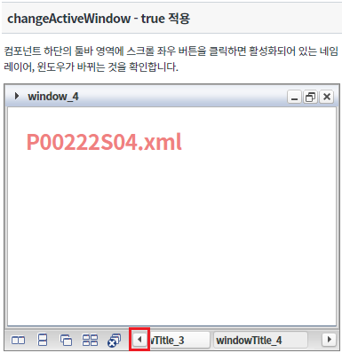
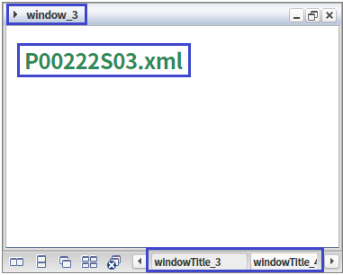
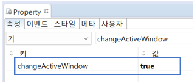
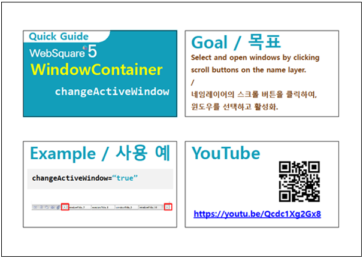

스크롤 좌우 버튼을 클릭할 경우 한 칸씩 네임 레이어 상의 탭을 이동하며 해당 탭을 활성화하는 기능 사용에 관한 예제입니다. 이 기능은 아래의 속성으로 사용할 수 있습니다. - changeActiveWindow : 스크롤 좌우 버튼으로 네임 레이어 이동 및 활성화 여부
속성 'changeActiveWindow' 미사용
속성 'changeActiveWindow' 사용
컴포넌트 하단에 위치한 툴바영역의 스크롤 좌우 버튼을 클릭합니다.
[브라우저(Chrome) 실행 예시]

좌우 스크롤을 클릭하여도 열려있는 윈도우 창에 표시되어 있는 것이 'P00222S04.xml'로 동일한 것을 확인합니다.
※좌 스크롤을 클릭하여 컴포넌트 하단 툴바 영역에 표시되어 있는 네임 레이어가 STEP1과 다르지만 활성화 상태는 변함이 없습니다.
[브라우저(Chrome) 실행 예시]

컴포넌트 하단에 위치한 툴바영역의 스크롤 좌우 버튼을 클릭합니다.
[브라우저(Chrome) 실행 예시]

윈도우 창에 표시되어 있는 것이 'P00222S03.xml'로 바뀐 것과 컴포넌트 하단의 툴바영역에 활성화 되어있는 네임 레이어가 다른 것을 확인합니다.
[브라우저(Chrome) 실행 예시]

WindowContainer 속성을 지정합니다.
[필수] changeActiveWindow="true" //changeActiveWindow="true" 속성 설정을 적용하면 네임 레이어 상의 스크롤 버튼을 클릭하여 윈도우를 선택하고 활성화할 수 있다.
그림 1.웹스퀘어5 SP5 스튜디오의 Property View(속성창) 예시

[소스 코드 예시]
<!-- windowContainer 의 소스 본문 예시 --> <w2:windowContainer changeActiveWindow="true" id="wgc_exam_2"> <!-- 생략 --> </w2:windowContainer>
changeActiveWindow
[웹스퀘어5 SP5 개발 가이드] WindowContainer
링크 : https://docs1.inswave.com/sp5_user_guide#7214a34e26fc99d7
[웹스퀘어5 SP5 개발 가이드] WindowContainer 스크롤 버튼을 통한 윈도우 활성화
링크 : https://docs1.inswave.com/sp5_user_guide#e4708d93c27131c7#
WindowContainer 스크롤 버튼을 통한 윈도우 활성화
링크 : https://youtu.be/Qcdc1Xg2Gx8
